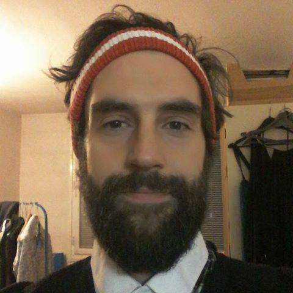
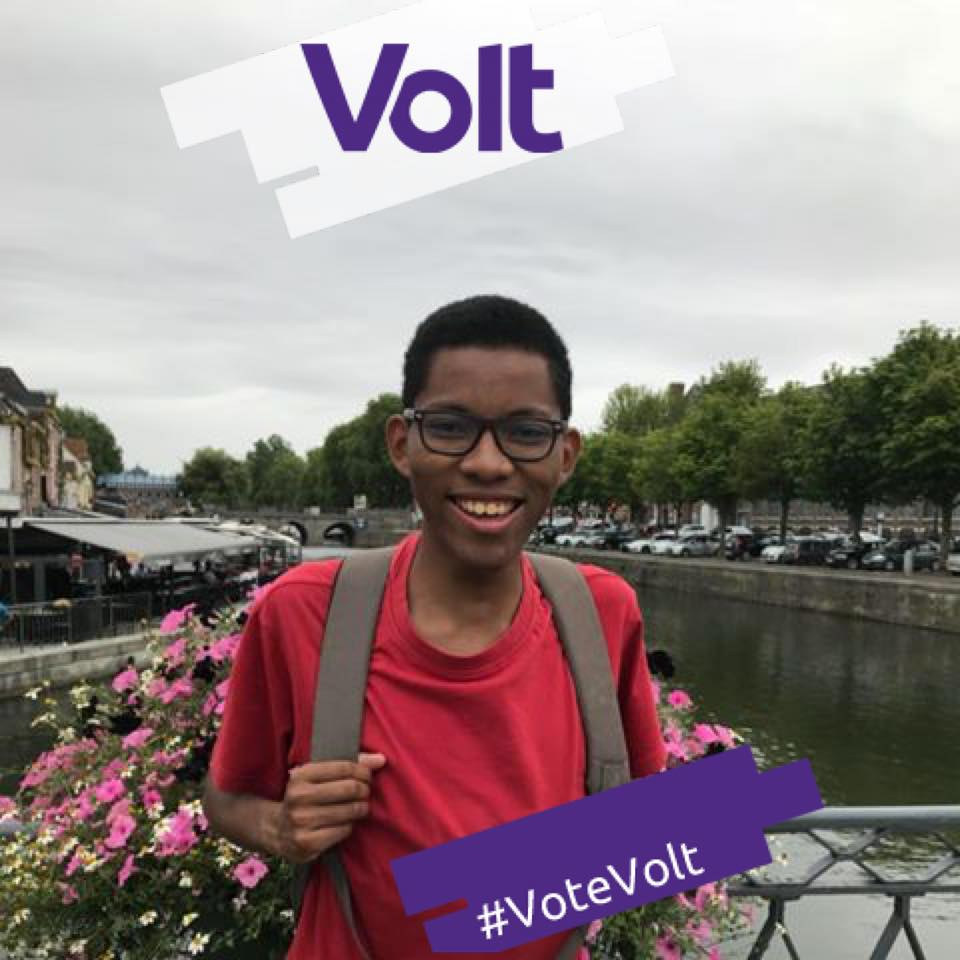
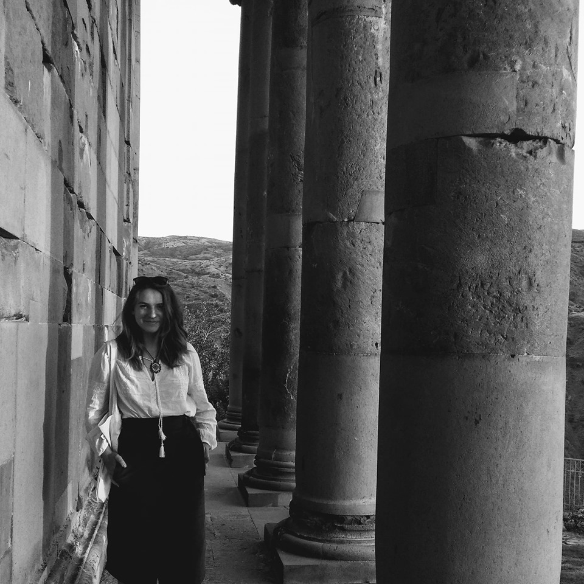
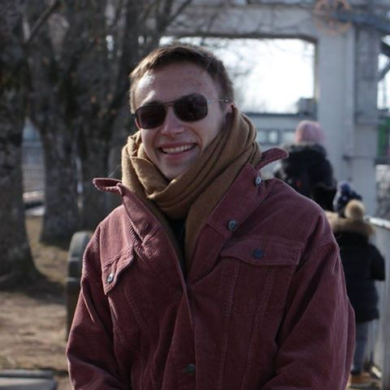
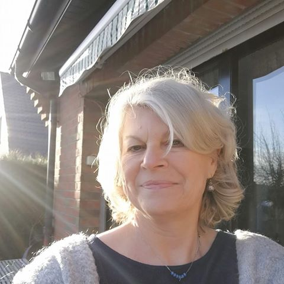

L'équipe Lille
Volt utilise la même structure d'organisation à l'échelle Européen, national et local avec des facilitateurs en charge pour gérer certains sujets dans une hiérarchie très horizontale. Une des idées de Volt est à responsabiliser - donc nos membres sont libre à prendre initiative et contribuer leurs efforts au sein du cadre qui est défini par nos valeurs.
Chef d'équipes fonctionnels
Les membres de Volt responsable de l'organisation du groupe de ville et les fonctions clés
-

Sven FRANCK
Chef d'équipe -
Loid OYENAMONO
Chef d'équipe Communication -
Chef d'équipe Campagne
Chef d'équipes des quartiers
Les membres qui organisent d'équipes communautaires et travaillent sur les quartiers de Lille.
-
Vieux-Lille -
Lille-Centre -
Bois Blancs -
Vauban-Esquermes -
Wazemmes -
Lille-Moulin -
Faubourg de Béthune -
Lille-Sud -
Saint-Maurice Pellevoisin -
Fives -
Hellemmes -
Lomme
Les sympathisants
Des associations, sympathisants et membres actifs de notre mouvement pour créer une administration municipale de citoyens.
- 
- 
- 
- 
-
Devenir Candidate -
Rejoignez-nous -
Vous en faites partie